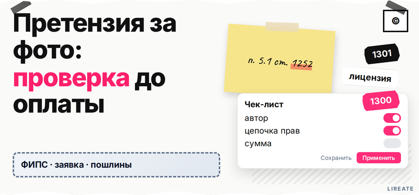
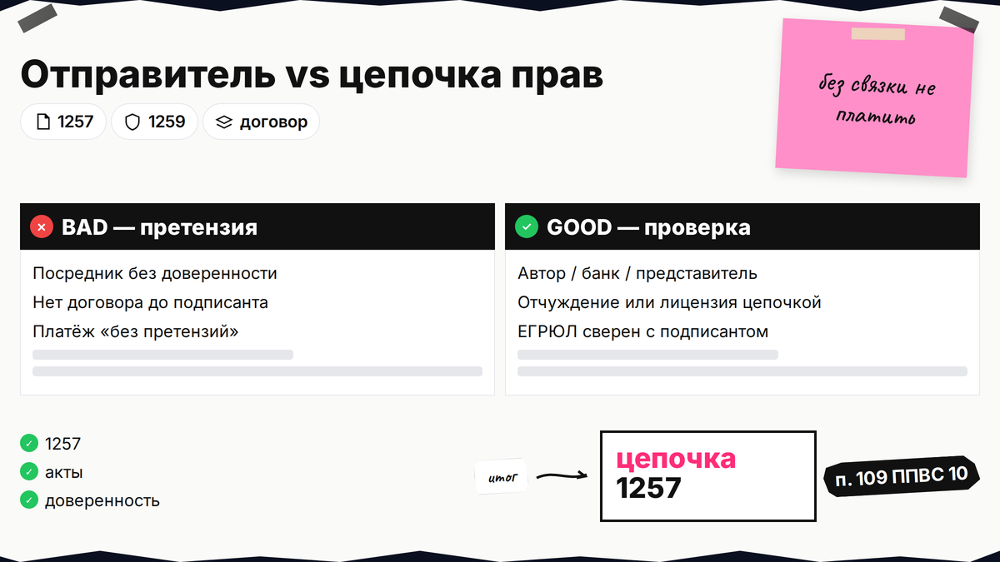
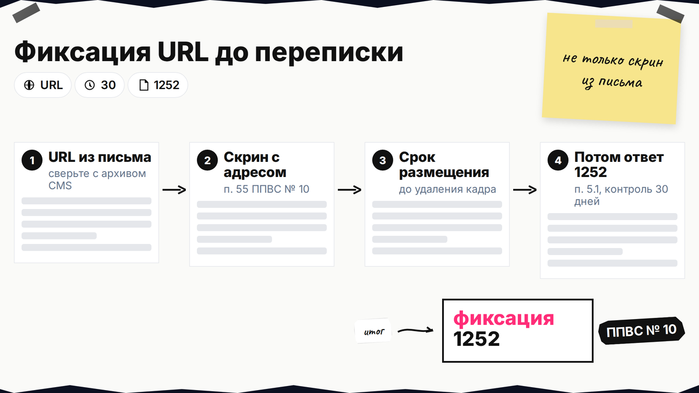
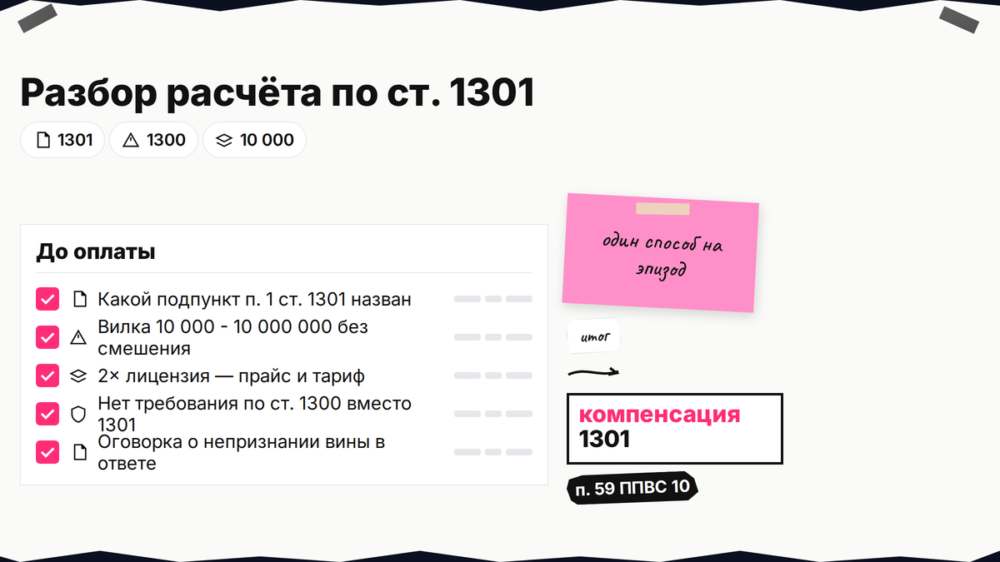

Претензия за использование фото из интернета приходит со скрином страницы, суммой и сроком оплаты. Перевод на карту фотобанка или фраза "оплачиваем без претензий" часто фиксируют позицию и облегчают иск по п. 5.1 ст. 1252 ГК РФ. До оплаты проверьте отправителя, право на снимок, источник файла и расчёт по ст. 1301. Ниже - чек-лист для сайта, маркетплейса и редакции. 27.11.2026; не замена консультации.

TL;DR / Быстрый инсайт: Фото из Яндекса или Google не становится вашим автоматически: без согласия правообладателя воспроизводить и публиковать снимок нельзя (п. 1 ст. 1229, п. 2 ст. 1270). До оплаты запросите цепочку прав, лицензию или чек стока, сверьте спорный URL с вашим архивом и разберите, какой способ компенсации выбран по ст. 1301. Своевременный письменный ответ с оговоркой о непризнании вины учитывается при снижении суммы (п. 62 ППВС № 10). Универсальный вход - что проверить в любой претензии; зеркальный сценарий фотографа - в материале если украли фотографии.
Это гайд по претензии за фотографию, а не по товарному знаку или тексту. Отделите требования по снимку от остальных. Ответственность в бизнесе наступает без доказывания вины (п. 3 ст. 1250 ГК РФ), но суд соразмерит сумму фактам - цифра в письме не равна решению. Цель чек-листа - понять, есть ли лицензия, силён ли расчёт по ст. 1301 и что писать до перевода, чтобы не закрепить лишнее в переписке.

Право на фото принадлежит автору (тому, кто нажал затвор) или лицу, которому право передали по договору. В письме должно быть ясно: требует автор, агентство, фотобанк или посредник. Презумпия авторства - ст. 1257, п. 109 ППВС № 10: инициалы на кадре или метаданные помогают, но в споре сверяют договоры. Без связки "файл - право - подписант" неясно, кому платить.
Запросите документы на право: отчуждение, лицензия с сублицензией, акт съёмки с передачей прав заказчику. У фотобанка - счёт-оферта и связка file ID со спорным кадром. У представителя - доверенность на претензии. Сверьте реквизиты с ЕГРЮЛ/ЕГРИП.
Делайте: ведите таблицу "кто подписал - какой документ - дата передачи права". Не делайте: платить посреднику без связки "файл у вас - право у подписанта".
Честный ответ: откуда появился файл. Ловушки: поиск без лицензии, копия с чужого сайта, договор с дизайнером без передачи прав, бесплатный тариф без коммерческого использования. Фото охраняется без регистрации (п. 4 ст. 1259). Если снимок ставил подрядчик, запросите у него подтверждение источника - ответственность перед правообладателем всё равно часто ложится на вас как на публикующего (п. 3 ст. 1250).
На стоке ищите сертификат, чек и тип лицензии (commercial vs editorial). Сверьте file ID с кадром в претензии. Для CC - условия NC/ND. Свободное использование по ст. 1274 и ст. 1295 редко покрывает рекламный баннер или карточку товара.
| Источник у вас | Что искать в архиве | Типичная слабость претензии |
|---|---|---|
| Сток (Shutterstock и аналоги) | Сертификат, email покупки, ID файла, тариф | Путают file ID или требуют повторную оплату правообладателю |
| Подрядчик / фотограф | Договор, ТЗ, акт, передача исключительного права | Права остались у исполнителя без отчуждения |
| Поиск картинок | Обычно нет лицензии | Спорят о праве отправителя |
Делайте: сопоставьте EXIF или hash файла на сервере с датой покупки или договора. Не делайте: называть в ответе "мы думали, раз в поиске - можно" - это против п. 7 Обзора ВС.

Соберите свой пакет: URL из письма, дата/время, PDF страницы, логи CMS или маркетплейса. Скрин по п. 55 ППВС № 10 - с полным адресом, не только кроп картинки. Перед удалением зафиксируйте срок размещения - иначе останется спор о компенсации за период. См. как фиксируют правообладатели. Одна кампания на сайте и в соцсетях часто - один эпизод (п. 22 Обзора ВС).
Делайте: назначьте одного ответственного за папку "Претензия фото". Не делайте: удалять кадр и переписку одновременно без бэкапа. Если правообладатель уже приложил обратный поиск - сохраните и его файл: так проще проверить, не путают ли похожий стоковый кадр с вашим.

По п. 1 ст. 1301 на эпизод - один способ: 10 000 - 10 000 000 руб., 2× лицензия или 2× экземпляры (п. 59 ППВС № 10). Проверьте названный подпункт, прайс и отсутствие смешения с ст. 1300. Контрдоводы - в гайде о снижении (п. 61-62 ППВС).
| Способ по ст. 1301 | Что перепроверить | Возражение ответчика (если применимо) |
|---|---|---|
| Твёрдая компенсация | Обоснование вилки, характер нарушения | Соразмерность, минимум при лёгком эпизоде по п. 62 ППВС |
| 2× лицензия | Прайс, аналоги, охват, срок публикации | Ваш сток дешевле, другой регион, editorial не для рекламы |
| 2× экземпляры | Редко для веб; количество копий | Один показ в браузере не равен тиражу |
Делайте: контррасчёт с альтернативной лицензией. Не делайте: признавать "согласны со всеми требованиями" до проверки. Сроки и обязательность претензии - в универсальном чеке.
Схема до оплаты: входящее письмо → проверка отправителя и цепочки прав → архив URL и лицензий → разбор ст. 1301 → ответ с запросом документов → (опционально) медиация / соглашение → при иске - маршрут защиты ИС в суде
Ответ: реквизиты, ссылка на претензию, позиция по URL, запрос документов, оговорка о непризнании вины, контррасчёт. Вручение - заказным письмом или ЭДО. Мировое соглашение - после проверки права, с перечнем URL и суммой. Иск - маршрут в суде.
Противоречия по праву или расчёту разумно сверить с юристом по ИС через заявку на Лирейт после закрытия внутреннего чек-листа.
Материал проверен: редакция Лирейт, практика ответов на претензии по фотографиям.
Достоверность данных: нормы ГК РФ и ППВС № 10 сверены с КонсультантПлюс на 27.11.2026. Кластер A31.
Документ на исключительное право (отчуждение или лицензия цепочкой до подписанта), подтверждение авторства, перечень URL с датами, доверенность представителя, расчёт с указанием способа по п. 1 ст. 1301 и скрины с полным адресом. Если прислали только счёт - попросите правовое основание и договор до оплаты.
Найдите в кабинете стока сертификат и ID файла, сравните превью и разрешение с кадром на сайте, проверьте тип лицензии (коммерческая или editorial) и срок. Для CC - страницу с версией лицензии и условиями NC/ND/SA.
Требование прекратить может быть удовлетворено, но компенсация за период размещения остаётся предметом спора. Используйте свои скрины и логи, чтобы показать срок и масштаб; после удаления аргументируйте снижение по п. 62 ППВС.
Письмо может указывать верх вилки по ст. 1301, но суд назначает сумму с учётом соразмерности и обстоятельств. Без обоснования 2× лицензии или тяжёлого характера эпизода завышенная цифра часто спорна - см. снижение компенсации.
Если нет согласия правообладателя и не работает свободное использование по ст. 1274 или 1295, использование без разрешения подпадает под ст. 1301. Источник в поиске не даёт лицензию.
Ответ фиксирует позицию, запрашивает документы и даёт шанс снизить сумму до суда. Молчание 30 дней после претензии о компенсации между ИП и ООО облегчает иск в арбитраже (п. 5.1 ст. 1252). Даже при согласии на оплату лучше оформить письменную оговорку и перечень URL.